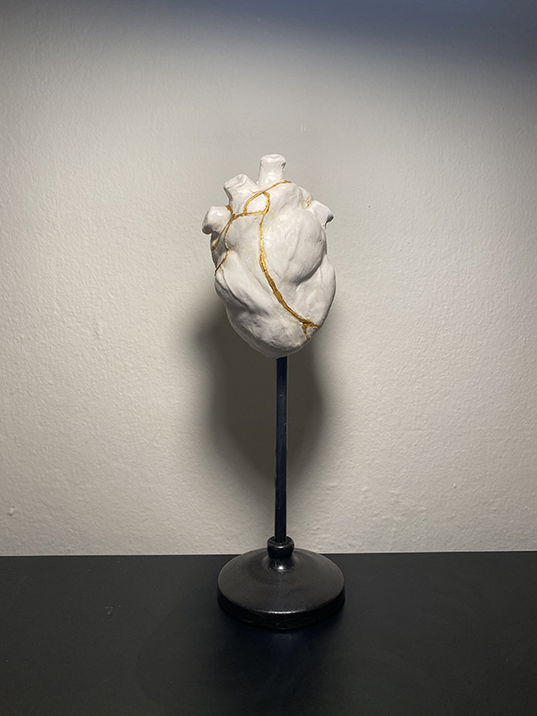

“Kintsugi-(金繕い”
We all deal with different times of emotion everyday. Love, anger, happiness, surprise, sadness, excitement, joy, disgust, or fear. With all these emotions involved, you may get a broken heart or a life full of joy. Despite trying so hard, there are times that you can’t hold it together.
Life throws us moments that knock us down. We have our hearts broken and watch as our dreams come crashing down. We lose jobs, get rejected, make mistakes, get betrayed, and lose loved ones. We hold it together for so long and then it happens-We break. What do you come up with after? Trying to pull yourself up and put the pieces back together. Based on a famous saying “ only weak things break “ . I thought. I was supposed to be strong. Yet, I got into a different situation that My heart was broken, my body was broken, my spirit was broken.
One day, I was scrolling on social media, where I saw an artwork broken, and glued back with gold! I found the piece really interesting and I searched for the meaning of it. The work inspired me so much that since two years ago, I came to this belief that it’s okay to be broken, it is okay to put your pieces back together and start again.
My spatial project is about a japanese method of repairing broken pottery called “kintsugi”
“All beautiful things carry distinctions of imperfection. Your wounds and imperfections are your beauty. Like the broken pottery mended with gold, we are all Kintsugi. Its philosophy and art state that breakage and mending are honest parts of a past which should not be hidden. Your wounds and healing are a part of your history; a part of who you are. Every beautiful thing is damaged. You are that beauty; we all are.” — Bryant McGill
Just like McGill mentioned, you don’t have to be perfect to be a beauty!
For this particular project, I used white plastina, and I found it flexible to work with. In order to smooth the edges, I used olive oil. I bought a candle stick and worked on it, painted it, and ended up using it as my sculpture stand.
The best way I could show the movement and the emotion, is that I highlighted some part of the heart, I showcased the veins, and shaped the heart as it is, by adding more lines and making round shapes using my hand to give it a muscular look.
I cutted off so many lines, I would say as many lines as I could remember as a pain in my personal life, and then I filled them up with Gold metallic color.
I feel very connected with this concept, as every time my heart broke, my soul didn't get bitter and my heart became more beautiful .
So my friend, I see you are broken. We broke in different ways, but we can be broken together. You don’t need to hold it all together all of the time. It’s ok if you need to rest. We can sit and rest together because I am tired too. This is hard. You aren’t alone and I’m glad that you are by my side. We’ll use the good times as gold to repair ourselves when the bad times break us. We can laugh together, cry together, and we can figure out this broken thing together. Together we will be beautifully broken.
I believe this piece deserves to be shown in a museum, first because it’s all a handmade piece, and second because it shows the fact that your scars make you even more beautiful.
Attached below is a picture of my final work, and also a process of my work, in a short video.

Contact: Pegah.taherieilaghi@sjsu.edu